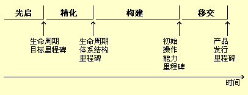

| 概念：评估质量 |
 |
|
|
在整个产品生命周期中，将执行流程和产品质量的评测和评估来管理质量。还将在重大事件出现时（例如在阶段结束时），或者在创建工作产品时（例如在代码走查）进行质量评估。以下是在生命周期期间出现的不同评估。 里程碑和状态评估Rational Unified Process（RUP）中的每个阶段和迭代产生可执行产品（内部或外部）发行版或者开发中的最终产品子集，这些时刻将为以下目的执行评估：
在每个 RUP 阶段（共四个阶段）结束时会出现主要里程碑，并验证是否已达到本阶段的目标。有四个主要里程碑：  次要里程碑将出现在每个迭代的结论处，并侧重验证是否已达到迭代目标。状态评估是在迭代和／或阶段中，对发展中的进度的定期评估工作。 另请参阅： 检查、复审和走查检查、复审和走查是注重评估工作产品的特定技术，并且是改进开发流程的质量和生产力的十分有效的方法。应以会议形式完成这些工作，让一个角色充当协调人，让另一个角色记录说明（变更请求、结果和问题等）。 IEEE 标准词汇表（1990 版）定义了以下三种工作：
请参阅指南：复审以获取关于执行检查、复审和走查的其他信息。 |
© Copyright IBM Corp. 1987, 2006. All Rights Reserved. |